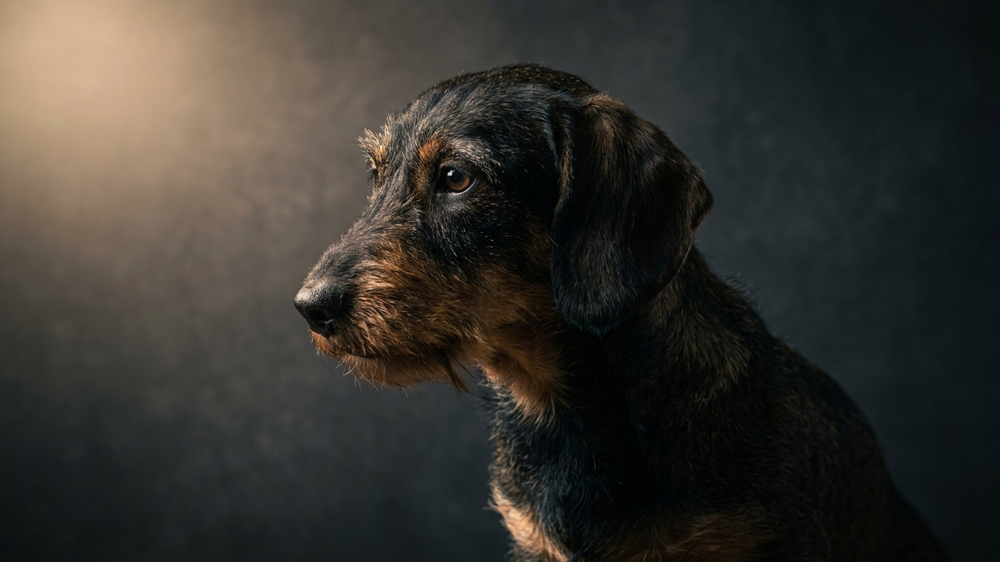

Такса прыгает с дивана раз в день — кажется, мелочь. Но для собаки с таким соотношением длины тела и роста каждый такой прыжок создаёт нагрузку, к которой позвоночник не приспособлен анатомически. Хорошая новость: большинство проблем со спиной у такс связано не с генетикой, а с бытом хозяина. Ниже — 6 конкретных привычек, которые реально меняют ситуацию.
🐾 Не уверены, что это опасно?
Опишите симптом в AnimaLife — AI-ветеринар за минуту подскажет, что в пределах нормы, а когда пора к врачу.
Это первое, чему стоит научить всех домашних, включая детей. Брать таксу одной рукой за грудь — так, чтобы тело провисало, — неправильно. Позвоночник при этом изгибается под собственным весом.
Правильная техника: одна рука поддерживает грудь, другая — круп. Тело собаки должно лежать горизонтально, без прогиба. Опускать — в обратном порядке, не бросая на пол с высоты руки.
Для большинства собак прыжок с дивана — пустяк. Для таксы это ударная нагрузка на межпозвоночные структуры, умноженная на длину тела. Один прыжок не катастрофа, но ежедневные прыжки за несколько лет — накопительный риск.
Решение простое: пандус или лесенка к дивану и кровати. Они стоят недорого, большинство такс осваивают их за 2–3 дня с лакомством. Убрать диван как точку прыжка проще, чем потом объяснять собаке, что нельзя то, что всегда было можно.
Каждый лишний килограмм у таксы — это дополнительное давление на всю длину позвоночного столба. Стандарт для миниатюрной таксы — до 5 кг, для стандартной — до 9 кг. Если рёбра не прощупываются легко через шерсть — вес уже за нормой.
Такса на ламинате или плитке постоянно напрягает мышцы кора, чтобы не разъехаться. Это невидимая, но реальная нагрузка на спину. Постелите нескользящие коврики на основных маршрутах — от лежанки к миске и к дивану. Регулярно стригите когти: длинные когти заставляют собаку менять постановку лап, что тоже влияет на осанку.
Для укрепления мышц спины и кора хорошо подходят медленные прогулки по неровному грунту, плавание (если такса его принимает) и простая дрессировка с подачей команд в движении. Прыжки, бег по лестницам и резкие старты-остановки — наоборот, нагрузка, которую стоит ограничить.
Профилактика — это хорошо, но есть сигналы, при которых ждать не стоит:
Чем раньше такса попадёт к специалисту при таких признаках, тем больше вариантов у врача. Откладывать «посмотрим пару дней» в этих случаях не стоит.
🐾 Питомец ведёт себя странно?
AnimaLife расшифрует поведение кошки и собаки и подскажет, что делать. Попробуйте бесплатно прямо в мессенджере.
🐾 Понравился разбор?
Подпишитесь на канал — каждый день разбираем по одному тревожному симптому у кошек и собак: что в пределах нормы, а когда пора к врачу. Подпишитесь, чтобы не пропустить разбор, который может спасти здоровье вашего питомца.